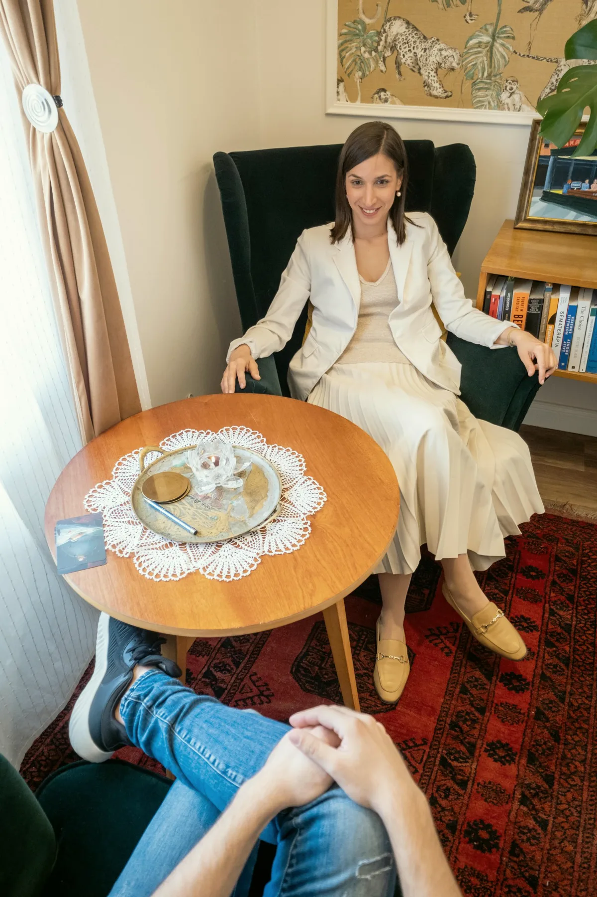

Kapcsolat, időpontkérés
Hívjon, vagy írjon, a többi a mi dolgunk
+36 30 961 1364Ügyfélszolgálat hétköznap 9-15. bejelentkezes@budaipszichologus.hu
- Cím
- 1016 Budapest, Mészáros utca 18.
I. emelet 15. és II. emelet 18. - Rendelés
- hétköznap 8-20, az utolsó időpont 19:00
- Egy alkalom
- 50 perc
- Lift, kód
- Nincs lift. A kapu kódját az időpont visszaigazolásával küldjük.
- Fogadó kolléga
- Vajas Zsuzsanna, pszichológus asszisztens
Három mód, ugyanaz az ügyfélszolgálat
Bármelyiket választja, Vajas Zsuzsanna veszi fel, hétköznap 9 és 15 óra között. Ő kérdez, Ön válaszol, és ebből lesz a javaslat.
Ha most szeretné megbeszélni. Hétköznap 9 és 15 óra között, azon kívül hangposta, és visszahívjuk.
E-mailbejelentkezes@budaipszichologus.huHa inkább leírná, mi történik. Egy munkanapon belül válaszolunk, a következő lépést is javasoljuk.
ŰrlapAz oldal aljánHa már tudja, kihez és mikor. Kitölti, elküldi, az ügyfélszolgálat visszahívja az egyeztetéssel.

Megérkezés
Bejárat és kód
Az utcai kapu zárva, a kódot az időpont visszaigazolásával küldjük e-mailben. A kapucsengőn a Központ neve szerepel.
Emelet, lépcső
Első emelet 15. és második emelet 18. A házban nincs lift. Ha a lépcső nehézséget jelent, jelezze az ügyfélszolgálatnak, első emeleti szobát adunk.
Parkolás
Utcai, fizetős zóna. Parkolóhely a környéken általában van, de a Mészáros utcában szűk.
Tömegközlekedés
A legközelebbi megállókról és a gyalogos útvonalról az ügyfélszolgálat tájékoztat a visszaigazolásban.
Várakozás
Az első emeleti folyosón lehet várni, a fogadó kolléga jelzi, ha szabad a szoba. Kérjük, az időpont előtt legfeljebb tíz perccel érkezzen.
hétköznap, az utolsó időpont 19:00
hétköznap, telefon és e-mail
perc, személyesen vagy online

Ha most van baj: Lelki Elsősegély 116-123, ingyenes, éjjel-nappal. Sürgősség: 112. A Központ nem ügyelet, időpontra fogad.
Időpontkérés
Amit tud, töltse ki, amit nem, hagyja üresen. Az ügyfélszolgálat hétköznap 9 és 15 óra között visszahívja, és megbeszélik a részleteket.